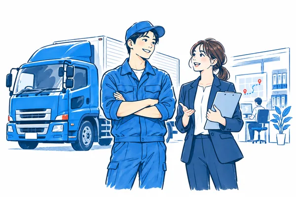

運送会社の、身近な相談相手へ。
運送会社ならではの悩み、安心して相談できていますか。

まずは、自社の現状を
知ることから。
名前・メールアドレスの登録は不要。
会社を守りたい。
でも、何から手を
つければいいんだろう。
給与は払っている。でも、未払いが心配。
時間のルールと現場の運行が合わない。
運賃を上げたい。根拠をどう伝えよう。
緑ナンバー更新。今、何を準備する？
運送会社を支える、
4つのコンサル。
新規許可申請／Gマーク・巡回指導・監査の準備もご相談いただけます。
現場を知る。実務がわかる。
その二人が、直接向き合います。
相談から見直しまで、基本的に二人で一貫して対応します。
20年ドライバー歴
10年整備管理者・配車等の管理業務
20年人事・社会保険・給与計算・制度設計
相談から、
見直しへの一歩まで。
- お申し込み
- 日程の調整・確定
- 60分の無料相談
- 支援内容・お見積もり
ご来店・ご訪問・オンライン・お電話
CONTACTまずは、お話を
まずは、お話を
聞かせてください。
運送会社ならではのお悩みを、
60分の無料相談で。